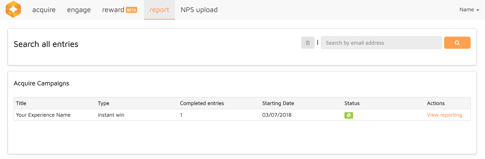
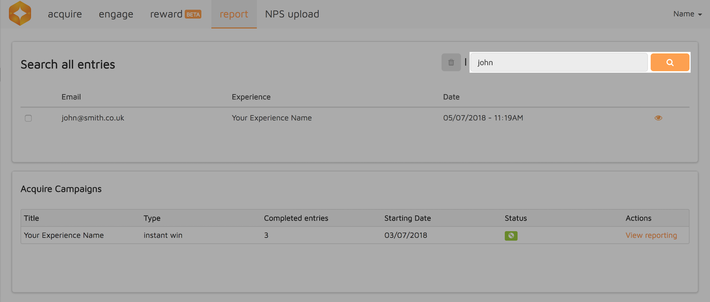
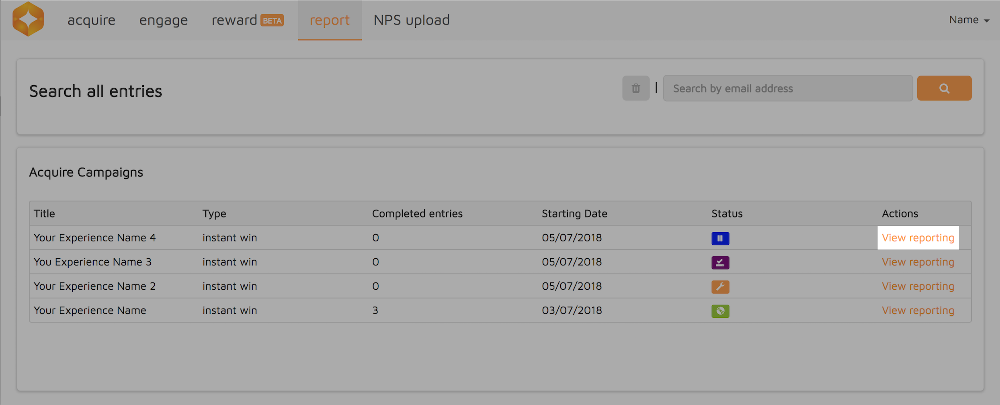
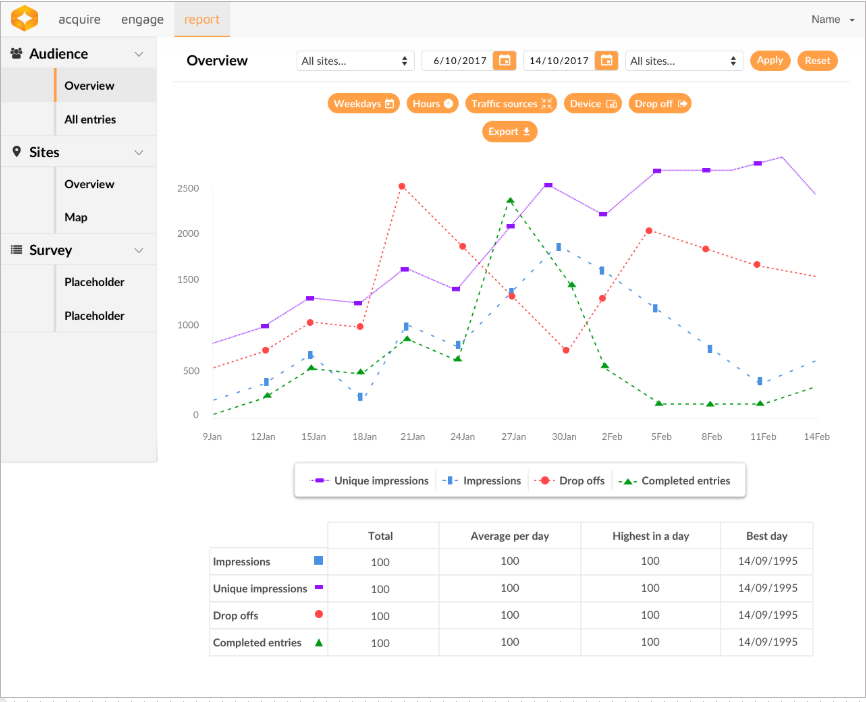
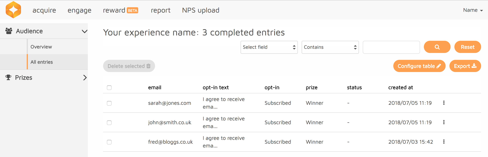
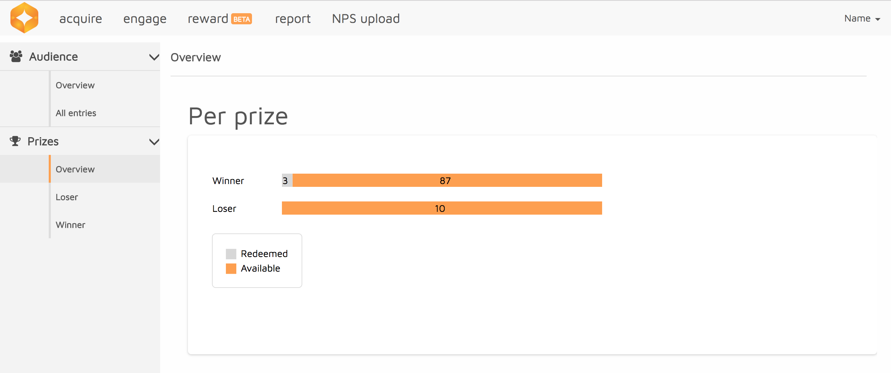

In this tutorial we will give you a step by step guide to viewing reports for all your Experiences. This will be reports for live campaigns, finished campaigns and those still running.

How to search the whole database for an entry across all Acquire Experiences
Type part or all the email address in the search bar provided.

Click on the Search icon button. The search results will appear in a table format below the search bar.
When in the Report tab, you have a table of all the Acquire Experience.
Choose what Experience to view reports for by click on View Reporting.

You will be taken to the Overview of your chosen campaign where you will see a histogram of the overall performance of the experience.
The histogram shows Unique Impressions, Impressions, Drop Offs and Completed Entries.
This page allows you to also view charts for Weekdays, Hours, Traffic Sources, Devices and Drop Offs. To do this click on the icons above the histogram.

Click on All Entries on the left sidebar for a list of all completed entries. A table will appear with all the completed entries where you can Configure Table to choose which columns you wish to show and which to hide.

To search for an entry, choose set the search criteria by Select Field, and type in the corresponding data in the search bar. Click the Search icon.
To delete an entry, simply check the box on the entry you wish to delete and click on Delete Selected button. You can delete multiple entries in one go by checking the boxes for all the entries you wish to delete.
You may also Export the data by clicking on the Export button. This will export in a CSV file.
On the left sidebar, you can navigate to Prizes to view an overview chart of the different prizes redeemed and available.

To view the table of completed entries for each prize, click on the prize and a table will appear, containing all the completed entries tied to that prize.